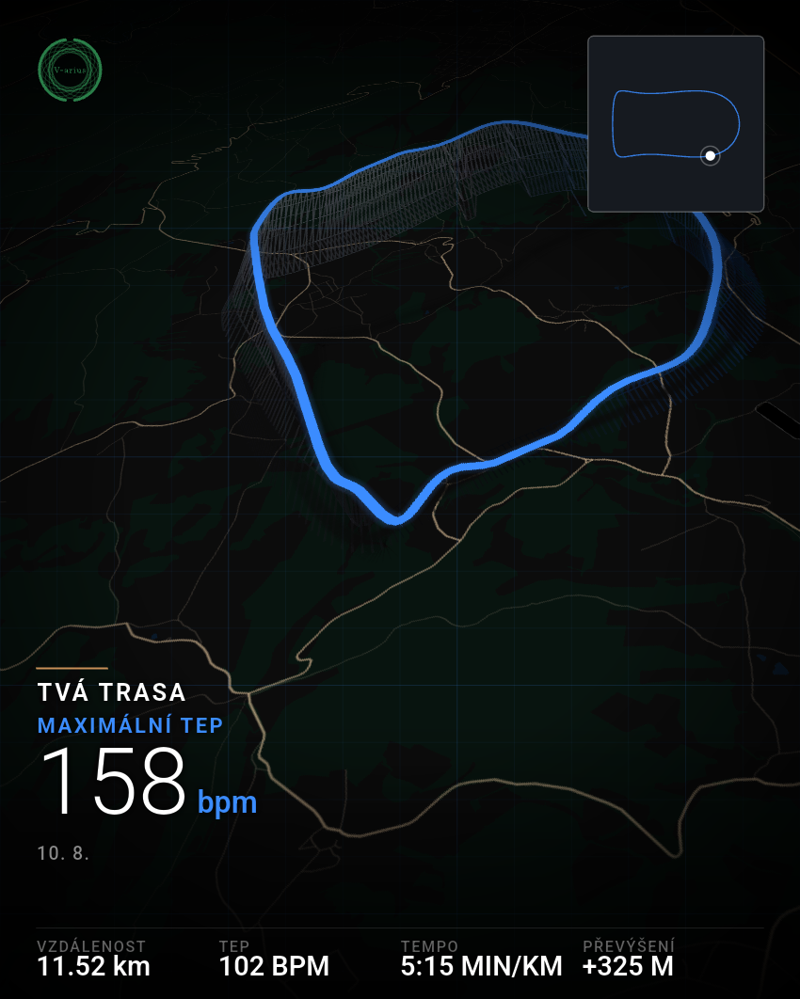

Vlastní projekt
Trénink a mapy.
Ale tak trochu jinak.
Běžné fitness aplikace mi vizuálně nesedly, tak si ve volném čase stavím vlastní. Zaměřuji se na netradiční uživatelské prostředí, čistší design map a trochu jiný způsob, jak zpracovávat a zobrazovat data z chytrých hodinek. Zatím systém ladím čistě pro sebe. Pokud tě tenhle směr zajímá, nech mi tu e-mail a dám ti vědět, až to uvolním ven.
